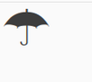
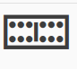

Введення-виведення (англ."Input and Output ")
Будуть ситуації, коли ваша програма повинна взаємодіяти з користувачем. Наприклад, ви хотіли б прийняти дані від користувача, а потім надрукувати деякі результати. Ми можемо досягти цього за допомогою функції input() і функції print відповідно.
Для виведення ми також можемо використовувати різні методи класу str (рядок). Наприклад, ви можете використати метод rjust, щоб отримати рядок, вирівняний по правому краю до зазначеної ширини. Дивіться help(str) для отримання додаткової інформації.
Іншим поширеним типом введення/виведення є робота з файлами. Можливість створювати, читати та записувати файли є важливою для багатьох програм, і ми дослідимо цей аспект у цій главі.
Введення від користувача (англ. "Input from user")
Зберегти цю програму як io_input.py:
def реверс(текст):
return текст[::-1]
def є_паліндром(текст):
return текст == реверс(текст)
щось = input("Введіть текст: ")
if є_паліндром(щось):
print("Так, це паліндром")
else:
print("Ні, це не паліндром")
Висновок:
$ python3 io_input.py
Введіть текст: пан
Ні, це не паліндром
$ python3 io_input.py
Введіть текст: мадам
Так, це паліндром
$ python3 io_input.py
Введіть текст: радар
Так, це паліндром
Як це працює
Ми використовуємо функцію зріз, щоб перевернути текст. Ми вже бачили, як можна зробити зрізи послідовностей,slices from sequences за допомогою коду seq[a:b], починаючи з позиції a до позиції b. Ми також можемо надати третій аргумент, який визначає крок (англ."step"), за яким виконується зріз. Крок за замовчуванням дорівнює «1», через що він повертає безперервну частину тексту. Введення від’ємного кроку, тобто «-1», поверне текст у зворотному порядку.
Функція input() приймає рядок як аргумент і відображає його користувачеві. Потім вона чекає, поки користувач щось введе та натисне клавішу введення. Коли користувач введе та натисне клавішу введення, функція input() поверне текст, який ввів користувач.
Ми беремо цей текст і перевертаємо його. Якщо вихідний текст і реверсований текст рівні, тоді текст є паліндромом.
Домашнє завдання
Перевірка того, чи є текст паліндромом, також має ігнорувати пунктуацію, пробіли та регістр літер. Наприклад, «Далі буде дуб і лад», також є паліндромом,але наша поточна програма так не вважає.Чи можете ви вдосконалити наведену вище програму, щоб програма розпізнала цей паліндром?
Підказка:
Скористайтеся кортежем (список усіх символів пунктуації можна знайти тут), що містять усі заборонені символи, та застосуйте тест на приналежність, щоб виявити символи, що підлягають видаленню, тобто forbidden = („!“, „?“, „.“, ...).
Варіант вирешення:
# покращена версія, буде ігнорувати всі
# знаки пунктуації, такі як пробіли, крапки, коми тощо.
ігнорувати_рядок = " .,;:!?"
def чистий_текст(чернетка):
чистий = ""
for x in чернетка:
if x not in ігнорувати_рядок:
чистий += x
return чистий
def reverse(текст):
return текст[::-1]
def є_паліндром(текст):
return текст.lower() == reverse(текст).lower()
# "Далі буде дуб і лад"
щось = input("Введіть текст:")
if є_паліндром(чистий_текст(щось)):
print("Так, це паліндром")
else:
print("Ні, це не паліндром")
Файли
Ви можете відкривати та використовувати файли для читання або запису, створивши об’єкт класу file ,а читати/записувати у файл - використовуючи його методи read, readline або write відповідно. Можливість читання або запису у файл залежить від режиму, який ви вказали для відкриття файлу. Після роботи з файлом, потрібно викликати метод close, щоб повідомити Python, що ми закінчили використовувати файл.
Приклад (зберегти якio_using_file.py):
вірш = """\
Програмування – це весело.
Коли робота виконана,
і якщо ви хочете повесилитися на роботі:
використовуйте Python!
"""
# Відкрито для написання(англ."'w'riting")
f = open('вірш.txt', 'w')
# Записати текст у файл
f.write(вірш)
# Закрийте файл
f.close()
# Якщо режим не вказано,
# pежим читання (англ."'r'eading") передбачається за замовчуванням
f = open('вірш.txt')
while True:
лінія = f.readline()
# Нульова довжина вказує на кінец файлу(EOF)
if len(лінія) == 0:
break
# У `рядку`(`line`) вже є новий рядок
# у кінці кожного рядка,
# оскільки він читає файл.
print(лінія, end='')
# закрити файл
f.close()
Висновок:
Програмування – це весело.
Коли робота виконана,
і якщо ви хочете повесилитися на роботі:
використовуйте Python!
Як це працює
Зауважте, що ми можемо створити новий файловий об’єкт просто за допомогою методу open. Ми відкриваємо цей файл (або створюємо його, якщо він ще не існує) за допомогою вбудованої функції open і вказуємо назву файлу та режим, у якому ми хочемо відкрити файл. Режим може бути режимом читання ('r'), режимом запису ('w') або режимом додавання ('a'). Ми також можемо вказати, чи ми читаємо, записуємо або додаємо дані: в текстовому режимі ('t') чи двійковому(бінарному) режимі ('b'). Насправді існує набагато більше доступних режимів, і help(open) надасть вам більше інформації про них. За замовчуванням open() вважає файл текстовим файлом і відкриває його в режимі читання.
У нашому прикладі ми спочатку відкриваємо/створюємо файл у режимі запису тексту та використовуємо метод write файлового об'єкта, щоб записати нашу рядкову змінну вірш у файл, а потім ми закриваємо файл за допомогою close.
Далі знову відкриваємо цей же файл для читання. Нам не потрібно вказувати режим, оскільки «читати текстовий файл» є режимом за замовчуванням. Ми читаємо кожен рядок файлу за допомогою методу readline у циклі. Цей метод повертає повний рядок, включаючи символ нового рядка в кінці рядка. Коли повертається порожній рядок, це означає, що ми перериваємо цикл за допомогою break.
Зрештою, ми остаточно закриваємо файл за домопогою close.
Ми бачимо з наших результатів readline, що ця програма справді записувала та читала наш новий файл вірш.txt.
Pickle
Python надає стандартний модуль під назвою pickle(рickle-англ."маринувати","солити"), який можна використовувати для зберігання будь-якого простого об’єкта Python у файлі, а потім отримати його назад. Це називається тривалим (англ."persistently") збереженням об’єкта.
Приклад (зберегти як io_pickle.py):
import pickle
# Ім'я файлу, де ми будемо зберігати об'єкт
файл_список_покупок = 'список_покупок.data'
# Список фруктів для покупки
список_покупок_фрукти = ['яблуко', 'манго', 'морква']
# Запис у файл
f = open(файл_список_покупок, 'wb')
# Вивести об'єкт у файл
pickle.dump(список_покупок_фрукти, f)
f.close()
# Знищити змінну список_покупок_фрукти
del список_покупок_фрукти
# Прочитати зі сховища
f = open(файл_список_покупок, 'rb')
# Завантажити об'єкт із файлу
збережений_список = pickle.load(f)
print(збережений_список)
f.close()
Висновок: ```$ python io_pickle.py ['яблуко', 'манго', 'морква']
**Як це працює**
Щоб зберегти об’єкт у файлі, ми маємо спочатку відкрити файл за допомогою `open` в режимі бінарного запису ('wb'), а потім викликати функцію `dump` із модуля `pickle`. Цей процес називається _консервацією_(англ."_pickling_").
Далі ми отримуємо об’єкт за допомогою функції `load` із модуля `pickle`, яка повертає об’єкт. Цей процес називається "розконсервацією"(англ."_unpickling_").
## Unicode
Досі, коли ми писали та використовували рядки або читали та записували у файл, ми використовували лише прості англійські символи. Як англійські, так і неанглійські символи можуть бути представлені в Unicode (будь ласка, перегляньте статті в кінці цього розділу для отримання додаткової інформації), а Python 3 за замовчуванням зберігає рядкові змінні (подумайте про весь той текст, який ми написали, використовуючи одиничні, подвійні або потрійні лапки) в Unicode.
> ПРИМІТКА. Якщо ви використовуєте Python 2, і ми хочемо мати можливість читати та писати іншими мовами, відмінними від англійської, нам потрібно використовувати тип `unicode`, і все починається з символу `u`, напр. `u"Привіт, Світ!"`
```python
>>> "Привіт, Світ!"
'Привіт, Світ!'
>>> type("Привіт, Світ!")
<class 'str'>
>>> u"Привіт, Світ!"
'Привіт, Світ!'
>>> type(u"Привіт, Світ!")
<class 'str'>
Коли дані надсилаються через Інтернет, нам потрібно надсилати їх у байтах... те, що ваш комп’ютер легко розуміє. Правила перекладу Unicode (це те, що Python використовує, коли зберігає рядок) у байти, називаються encoding (encoding- англ."кодування","шифрування"). Популярним encoding є UTF-8. Ми можемо читати та писати в UTF-8, використовуючи простий ключовий аргумент у нашій функції open.
# encoding=utf-8
import io
f = io.open("abc.txt", "wt", encoding="utf-8")
f.write(u"Уявіть собі неанглійську мову")
f.close()
text = io.open("abc.txt", encoding="utf-8").read()
print(text)
Як це працює
Ми використовуємо io.open, а потім використовуємо аргумент encoding у першому рядку коду (in the first open statement) для кодування повідомлення, а потім знову в другому рядку коду open під час декодування повідомлення. Зауважте, що ми повинні використовувати кодування лише в рядку коду open у текстовому режимі.
We use io.open and then use the encoding argument in the first open statement to encode the message, and then again in the second open statement when decoding the message. Note that we should only use encoding in the open statement when in text mode.
Кожного разу, коли ми пишемо програму, яка використовує літерали Unicode (ставляючи u перед рядком), як ми використовували вище, ми повинні переконатися, що самому Python повідомляється, що наша програма використовує UTF-8, і ми повинні поставити # encoding=utf-8 коментар у верхній частині нашої програми.
Whenever we write a program that uses Unicode literals (by putting a u before the string) like we have used above, we have to make sure that Python itself is told that our program uses UTF-8, and we have to put # encoding=utf-8 comment at the top of our program.
Ви повинні дізнатися більше про цю тему, прочитавши:
- "Абсолютний мінімум, який кожен розробник програмного забезпечення має знати про Unicode та набори символів", англ."The Absolute Minimum Every Software Developer Absolutely, Positively Must Know About Unicode and Character Sets"
- Python Unicode Howto
- Pragmatic Unicode talk by Nat Batchelder
Від перекладача:
Як працювати з unicode: 1.знайдіть перелік символів у wiki: https://en.wikipedia.org/wiki/List_of_Unicode_characters ; 2.знайдіть один знак (наприклад: надрукувати парасольку), у вікіпедії сказано, що юнікод: U+2602; 3.якщо unicode містить 4 цифри або менше: print("\u2602")

4.у випадку друку знака плитки доміно 6, unicode - U+1F061 5.даний Юнікод містить більше 4 цифр: заповнити рядок початковими нулями, поки не буде 8 цифр: print("\U0001F061")

Резюме
Ми обговорили різні типи введення-виведення, обробку файлів, модуль pickle і Unicode.
Далі ми розглянемо концепцію винятків.